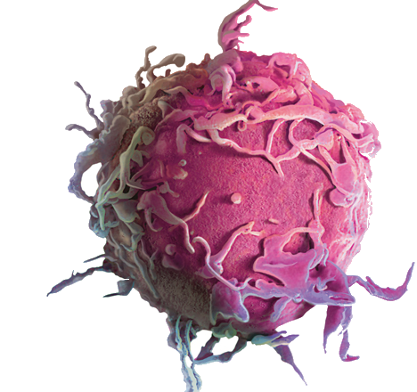

 O Câncer é o nome que se dá a um grupo de mais de 200 doenças, tendo em comum o crescimento e multiplicação das células de forma descontrolada. Na maioria das vezes, essas células anormais se tornam tumores sólidos, que invadem regiões vizinhas e ainda podem ir para outras partes do corpo, esse processo é chamado de metástese. Porém, em casos de cânceres que afetam o sangue, como a leucemia, raramente são gerados tumores e mestáses, no entanto, podem invadir os tecidos e órgãos diretamente, prejudicando o corpo.